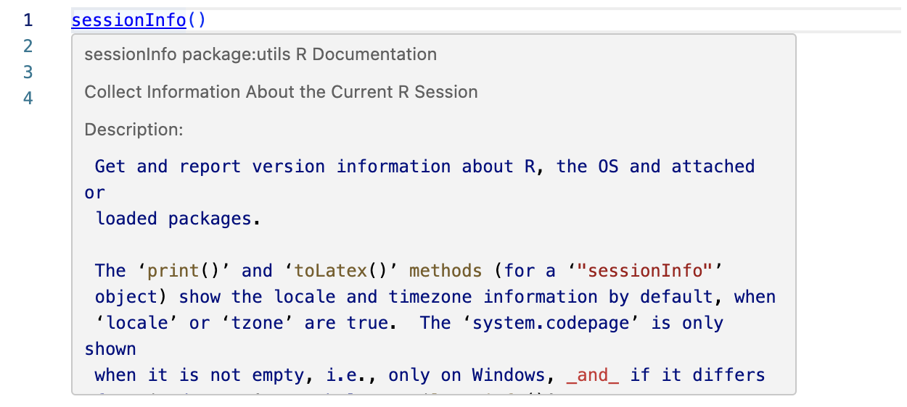
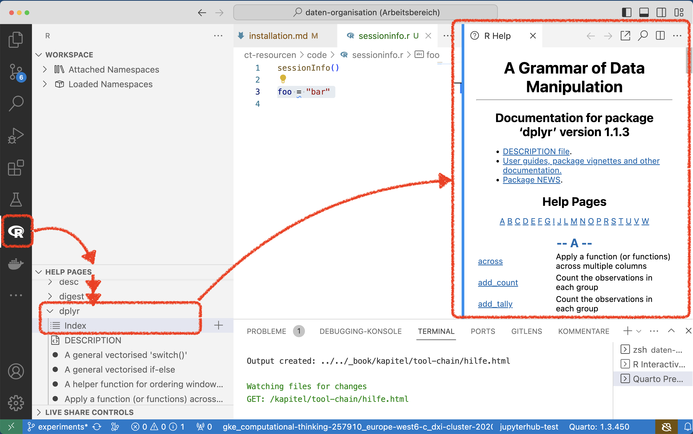
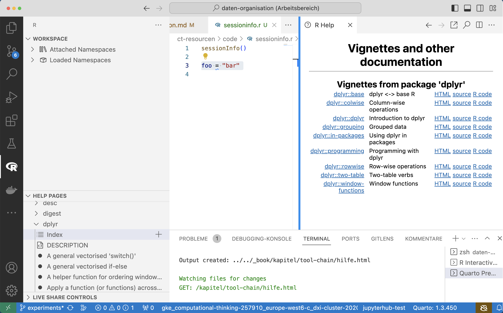

3 Hilfe bekommen
R-Funktionen sind in der Regel gut dokumentiert. Neben der eigentlichen Funktionsbeschreibung finden sich viele ausführliche Problemlösungsstrategien in Form sog. Vignettes. Zusätzlich finden sich für die tidyverse-Bibliotheken sog. Cheat Sheets, die einen schnellen Überblick über die Kernfunktionen erlauben.
Nutzen Sie die Dokumentation regelmässig, um die richtigen Funktionen für Ihre Problemstellungen auszusuchen. Die verschiedenen Teile der R-Dokumentation helfen Ihnen die Konzepte und Techniken für die Arbeit mit R zu vertiefen.
3.1 help()
Die help()-Funktion ist der erste Anlaufpunkt, um mehr über eine Funktion zu erfahren.
R-Funktionen sind in der Regel sehr ausführlich dokumentiert. Falls Sie Details über die Arbeitsweise einer Funktion erfahren möchten, können Sie die Dokumentation einer Funktion mit der help()-Funktion abrufen. Dazu rufen Sie diese Funktion wie jede andere R-Funktion auf.
Die help()-Funktion ist Teil von Base R und ist in jeder Umgebung verfügbar.
Die Funktion erwartet den gewünschten Funktionsnamen. help() kann der Funktionsname direkt oder als Zeichenkette als Parameter übergeben werden. D.h. die beiden folgenden Operationen haben den gleichen Effekt und zeigen die Dokumentation der Funktion read.csv an.
Beispiel 3.1 (Hilfe anzeigen)
help(read.csv)
help("read.csv")In Visual Studio Code ist es nicht notwendig, die help()-Funktion aufzurufen, weil die Hilfe direkt in die Arbeitsumgebung integriert ist. In R-Scirpten reicht es, den Mauszeiger über eine Funktion zu bewegen. Visual Studio Code zeigt dann die Hilfe direkt im Editor an (Abbildung 3.1). Diese Darstellung wird als Inline-Hilfe bezeichnet.

Neben der Inline-Hilfe lassen sich alle Funktionen der installierten R-Bibliotheken auch über den Abschnitt Help Pages der R-Erweiterung zugreifen. Dort findet sich unter dem letzten Punkt Help Topics by Packages die Dokumentation für alle auf dem Computer installierten Bibliotheken. Der erste Unterpunkt für jede Bibliothek ist der Index, der alle Dokumente für eine Bibliothek auflistet (Abbildung 3.2). Nach dem Installieren einer Bibliothek sollte diese Seite aufgerufen werden, um sich mit der installierten Version vertraut zu machen.
Im Internet finden sich viele Materialien zur Verwendung einzelner Bibliotheken. Oft beziehen sich diese Materialien auf ältere Versionen der jeweiligen Bibliothek. Damit ist nicht sichergestellt, dass die beschriebenen Techniken der richtigen Vorgehensweise entsprechen. Deshalb sollte immer die offizielle Dokumentation der installierten Bibliotheken zur Überprüfung der beschriebenen Methoden herangezogen werden.

dplyr3.1.1 Aufbau von Funktionsdokumentationen
Die meisten R-Bibliotheken folgen einer Konvention zur systematischen Dokumentation von Funktionen. Jede Funktionsdokumentation besteht aus den folgenden Teilen:
- Beispielen für den Aufruf der Funktion
- Beschreibung aller Funktionsparameter
- Einer detaillierten Funktionsbeschreibung
- Beispielen
Die Beispiele zeigen typische Aufrufe der jeweiligen Funktion und finden sich immer am Ende der Dokumentation. Es lohnt sich häufig zuerst die Beispiele anzusehen und danach die Funktionsdetails zu lesen.
3.2 Vignettes
Viele R-Bibliotheken haben komplexe Anwendungen. Diese Anwendungen werden in sogenannten Vignettes beschrieben. Eine Vignette ist eine ausführliche Beschreibung einer Funktion oder des Zusammenspiels mehrerer Funktionen mit nachvollziehbaren Beispielen.
Sie können sich die verfügbaren Vignettes für eine Bibliothek mit der Operation vignette(package = bibliotheksname) anzeigen lassen. Wenn Sie z.B. alle Vignettes für die dplyr Bibliothek anzeigen lassen möchten, dann geben Sie vignette(package = "dplyr") ein. Das Ergebnis ist die Liste der verfügbaren Vignettes für diese Bibliothek.
Wenn Sie das gesuchte Thema gefunden haben, dann können Sie sich die Vignette mit dem folgenden Befehl anzeigen lassen: vignette(thema, package = bibliotheksname)

dplyr AnleitungenIn Visual Studio Code sind alle Vignettes einer Bibliothek (Abbildung 3.3) über deren Dokumentationsindex (Abbildung 3.2) erreichbar. Dadurch lassen sich Anleitungen oft leichter finden.
3.3 Cheat Sheets
Die tidyverse-Bibliotheken bieten zusätzlich Spickzettel für die wichtigsten Funktionen und Techniken für eine Bibliothek auf zwei Seiten. Diese Spickzettel werden auch als Cheat Sheets bezeichnet. Sie können diese Cheat Sheets doppelseitig ausdrucken und als Schnellreferenz verwenden.
Im Git-Repository rstudio/cheatsheets finden sich Spickzettel und Kurzreferenzen viele R-Bibliotheken.
Die Spickzettel sind nicht Teil der Dokumenation einer Bibliothek und werden nicht mit ihr gepflegt.
Ein Spickzettel ersetzt nicht die Dokumentation! Gelegentlich verweisen Spickzettel auf stark veraltete Praktiken. Es ist also immer ein Vergleich mit der offiziellen Dokumentation notwendig.
Die folgenden Spickzettel unterstützen die Arbeit mit diesem Buch: